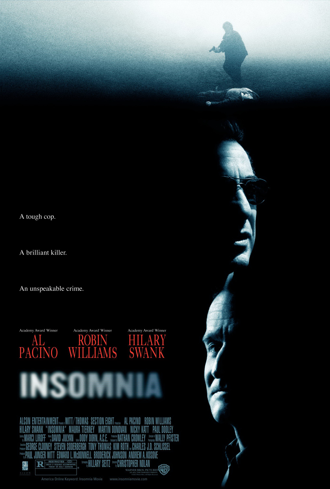

Бессонница Insomnia

«Вздремнуть немного, немного отдохнуть» Завернутая в оболочку криминального триллера, «Бессонница» - на самом деле серьезнейшая психологическая драма о преступлении и наказании.
И фильм нужно воспринимать именно с такой позиции. После выхода картины было немало отзывов, что фильм нудный и скучный, так сказать – «лучшее лекарство от этой самой бессонницы!» Конечно, если относится к ленте
Кристофера Нолана, как к среднестатистической голливудской продукции, то естественно возникнет недоумение. А почему так тяжело смотрится? А где же трюки и спецэффекты, ураганная пальба и позитивный победоносный
настрой? Увы, друзья мои, «Бессонница» - картина совсем из другой обоймы.
«Бессонница» - ремейк норвежского фильма 1997 года и именно этим объясняется непростой сценарий и тяжелая гнетущая атмосфера. Удачно выбранный на роль постановщика, Кристофер Нолан не стал по-голливудски
упрощать картину, а снял ленту, близкую к оригиналу. Поэтому фильм производит впечатления европейского продукта, он многогранен, с глубоко и четко проработанными психологическими нюансами и снят скорее в арт-хаусном,
нежели в мейнстримном стиле. Все, что мы наблюдаем в фильме – это продуманный и блестяще реализованный авторский стиль, точно соответствующий содержанию ленты. На протяжении всей картины мы с головой погружаемся в балансирующий
на грани безумия внутренний мир полицейского Уилла Дормера. Сильные душевные терзания наряду с отбирающей последние силы хронической бессонницей, сыграны Аль Пачино поистине гениально. Если бы
даже фильм снимал не Нолан, а менее талантливый режиссер, один Пачино все равно бы вытянул картину, возведя ее на ступень выше стандартного психотриллера. А так, мощная режиссура вместе с потрясающей
актерской игрой производят очень сильное впечатление. Да, фильм непростой по своей сути и тяжелый для просмотра, но ведь тем и отличается серьезное кино от развлекательного. Эта картина, которую не
стоит смотреть для отдыха, потому что тогда она совсем не понравится и, возможно, вы не досмотрите ее до конца.
«Бессонница» - фильм для внимательного и вдумчивого зрителя, который воспринимает кино, как искусство, а не аттракцион.